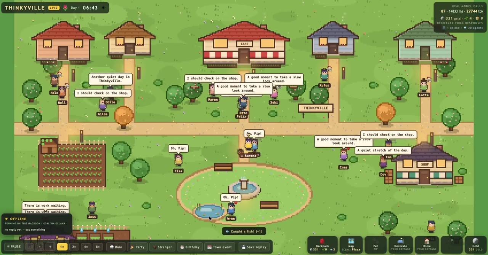
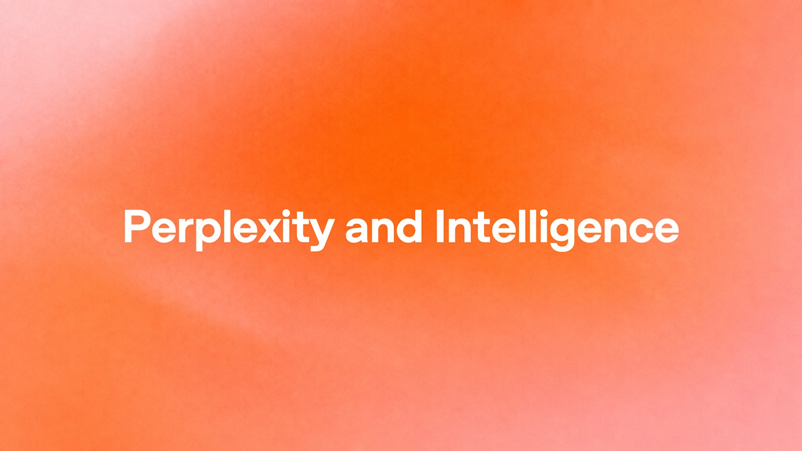
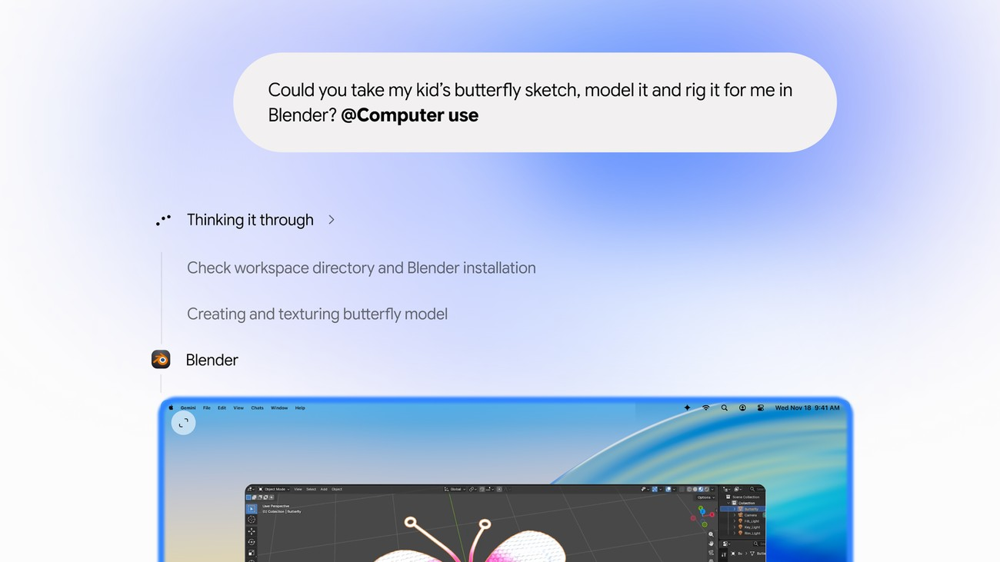
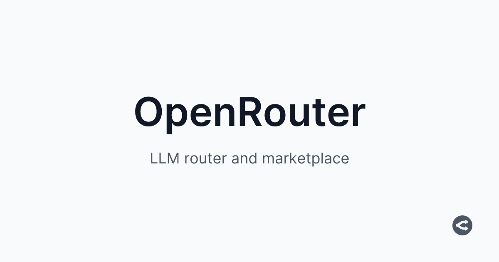
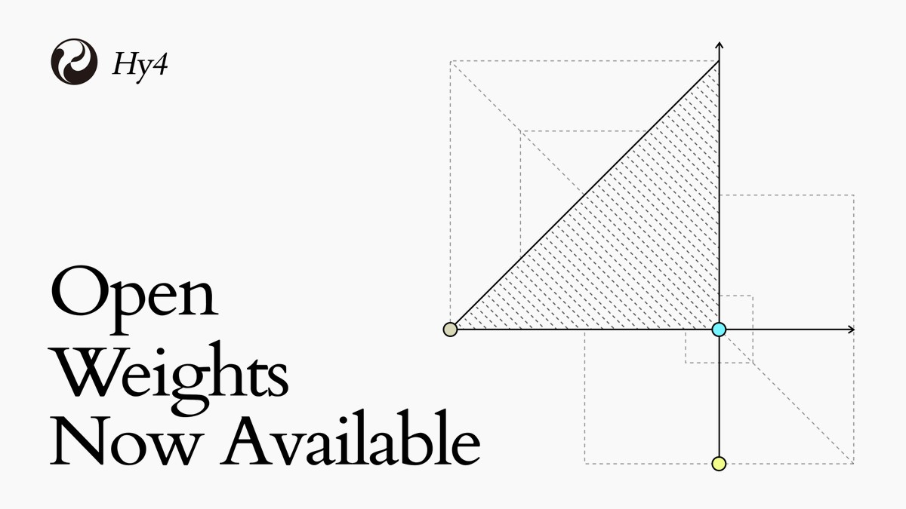
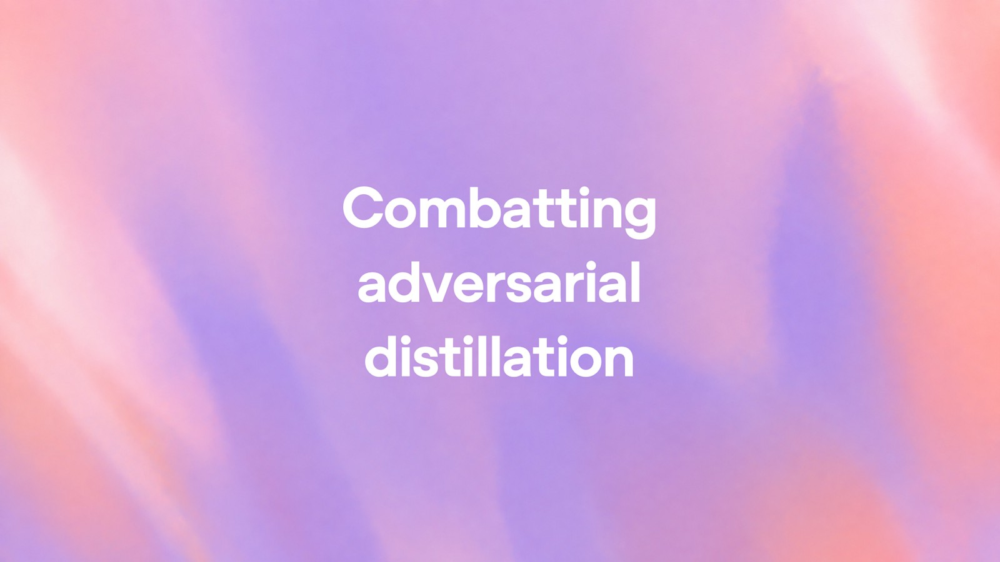

01研究 头条未证实项
Alpöge 放出约 1700 万行 Lean 代码宣称与 Claude 证明黎曼猜想；Lean 与 Mathlib 社区联合声明确认证明正确
11-20 至 11-22 北京时间周末头条 · 热榜 #1独立来源 5 家
Scientific American 报道配图（图片来源：scientificamerican.com og:image）
介绍
Anthropic 数学家 Levent Alpöge 于 2026 年 11 月 20 日宣称，与 Claude 合作得到黎曼猜想（并称方法可推广至广义黎曼猜想）的证明，未以传统论文形式发表，而是放出一份 Lean 证明库。Lean 社区博客署 2026-11-21 13:55 的联合声明写明：该库「comprising 17 million lines of code」，社区「have full confidence that Alpöge's proof of the Riemann Hypothesis is correct」。声明由 Lean 与 Mathlib 社区联合发表，并得到 Lean FRO 与 Mathlib Initiative 背书。它列出四项核验：命题即 Mathlib 中已经专家审定的 RiemannHypothesis；已有数十人独立编译并得到相同的原始证明导出；社区另增一份只依赖 Mathlib 的命题隔离文件，用 comparator 与 con-leche --compare 两套工具确认所证定理与 Mathlib 命题一致；导出证明经 Lean 官方内核、con-leche、con-ron 及第三方、不同语言实现的检查器复核，且后两者带有「相对于集合论、不会接受错误证明」的形式化论证。声明同时写明：接下来的工作是帮助数学界理解证明中的新想法。The Decoder 另报道，宣布数小时后斯坦福方面放出 Alessandro Masullo 的「纯人类」竞争草稿，但约八小时后有人反馈该草稿存在问题；本期未打开 Ravi Vakil 博客原文，不把这份人类草稿写成已经核验的证明。
为什么重要
这是本窗口内最重大的科学事件：一项被形式化验证社区公开背书的黎曼猜想 Lean 证明，与「AI 是否独立完成」「证明思想是否已被理解」的争论同时出现。形式化核验通过，并不等于数学界已经消化并承认其思想贡献。
要点
- Lean / Mathlib 官方声明（博客时间戳 2026-11-21 13:55，未标明时区）：联合声明并对 Lean FRO、Mathlib Initiative 背书。写明 Alpöge 于 11 月 20 日放出「17 million lines」的 Lean 库，社区对黎曼猜想证明「full confidence that … is correct」。四项标准均称已满足，概述页指向 https://math.mit.edu/~drew/grh/ 。声明结尾期待数学社区帮助「explain the new ideas in this proof」。
- Alpöge 的表述（媒体转述，本期未打开其个人网站）：The Decoder 与 Scientific American 均引述他写道「I believe I have, working with Claude, discovered a proof of the Riemann Hypothesis」，并称方法也可用于广义黎曼猜想。打印页数「超过 25 万页」出自媒体对 Alpöge 的转述，本期未在官方声明中看到该数字，不作官方数字使用。Anthropic 公司官方新闻稿在本窗口内未见就此事发声。
- 斯坦福「纯人类」草稿（The Decoder，须谨慎）：报道称斯坦福数学教授、美国数学会会长 Ravi Vakil 在博客上匆忙转发数学家 Alessandro Masullo 的独立人类证明草稿，并称 Brian Conrad 已审阅数月；约 八小时后 Vakil 更新，称有人（在不同 AI 模型协助下）指出该草稿存在问题。本期未打开 Vakil 原文，这条只作媒体交叉，不升格为已确认的竞争证明。
- 边界：本期不把「黎曼猜想已被数学界公认解决」写成既成事实；不把功劳简单归给「Claude 独立完成」。菲尔兹奖得主詹姆斯·梅纳德的采访（IT之家 11-22 17:35）称他相信形式化验证与独立复核，但「需被理解才可能获认可」——该采访页已找到链接，正文未逐字打开，只作速览提示，不把原话当作已核对引语。
⚠ Alpöge 个人网站本期未打开（leventalpoge.com 返回几乎为空），其原话与「25 万页」等数字来自媒体转述
⚠ Anthropic 公司官方未就该证明发布新闻稿
⚠ Masullo 人类草稿及随后被指出的问题，仅据 The Decoder，未打开 Vakil 博客，不作为已核验证明
⚠ 梅纳德采访正文未逐字打开
02产业未证实项
Anthropic 上市首日开盘 111.50 美元、收盘 97.17 美元，较 83 美元发行价上涨约 17%
11-20 05:00（美东 11-19 收盘） 北京时间周末主线 · 热榜 #5 · 上期已报道定价与上市日安排，本期补开盘与收盘独立来源 4 家
Anthropic 团队在纳斯达克出席上市活动（图片来源：CNBC / Getty Images）
介绍
上期（11-19）已报道 Anthropic 以每股 83.00 美元定价、代码 ANT、预计 11 月 19 日在纳斯达克开交易，并把开盘与收盘留待本期。CNBC 直播稿（Updated Thu, Nov 19 2026 7:04 PM EST，北京 11-20 08:04）写明：股票开盘 111.50 美元，收盘 97.17 美元，较发行价上涨 17%；公司「raised $81.3 billion in the IPO」，「sold 980 million shares at $83 a piece」；收盘时充分稀释市值约 1.8 万亿美元；成交超过 8.46 亿股。这些收盘数字发生在 16:00Z（北京 11-20 00:00）之后，属于本窗口。官方定价稿仍是上期已核对的条款，本身不含市值或募资总额；813 亿美元与约 1.8 万亿市值是 CNBC 的表述与测算。
为什么重要
这是有记录以来规模最大的 IPO 之一的首日交易结果，也是上期明确推迟的核心数字。开盘曾显著高于发行价，收盘回落到 97.17 美元，市场对「AI 实验室上市」的定价仍在剧烈波动。
要点
- 首日成交（CNBC，已打开原文）：开盘 111.50 美元，收盘 97.17 美元，较发行价 83 美元上涨约 17%。CNBC 称成交超过 8.46 亿股，并与 SpaceX 开盘日 5.22 亿股对照。盘中最高 115.10、最低 92.72 未在这份 CNBC 稿中出现，本期不用。
- 发行规模与募资（交叉）：上期已核对的 Anthropic 官方定价稿写明发行 980,000,000 股 Class A（公司出售 956,351,354 股，出售股东 23,648,646 股，后者收益公司不得）。CNBC 称「the company raised $81.3 billion」，计算上等于 9.80 亿股 × 83 美元，其中包含出售股东股份，不宜直接写成「公司募资 813 亿」。官方稿仍未给出募资总额或市值。
- 市值（媒体测算，非官方）：CNBC 称收盘充分稀释市值约 1.8 万亿美元，标题与视频导语还出现「tops $2 trillion」的盘中提法。本期把约 1.8 万亿与「一度站上 2 万亿」都标为媒体测算，不当作交易所官方数字。
- 官方与 X：@AnthropicAI 于 11-20 01:01（17:01:09Z 11-19）发布 Dario Amodei 就 IPO 的声明摘录，窗内 12,362 赞、1,359 条回复、2,971 次收藏，为本期 X 雷达第 1；次日 00:57 的联合创始人故事帖 5,296 赞，为雷达第 3。次日股价走势（Yahoo 等显示 11-20 美东收于 88.91 美元）本期未打开行情页，不写入主线。
⚠ 813 亿美元为 CNBC 对 9.80 亿股×83 美元的表述，含出售股东股份，官方稿未给募资总额
⚠ 约 1.8 万亿与盘中 2 万亿均为媒体充分稀释测算，不是交易所官方数字
⚠ 盘中最高/最低未在已打开的 CNBC 稿中核对，不用
⚠ 次日收盘未打开行情页，不写入
03模型未证实项
Thinking Machines 发布 Inkling 2 Mini：总参 26.4B 的循环 Transformer，可在 32GB 内存 Mac 上本地运行
11-20 北京时间周末主线 · 热榜 #3独立来源 3 家

官方演示 Thinkyville：同一台离线 Mac 上由 Inkling 2 Mini 驱动 20 个村民智能体（图片来源：thinkingmachines.ai 文章海报）
介绍
Thinking Machines Lab 官方新闻稿署 Nov 20, 2026，发布开放权重模型 Inkling 2 Mini。官方写明它是循环 Transformer：中间层对每个 token 运行三次；结构为 MoE，总参数 26.4B，激活 3.4B，因循环带来每 token 5.4B 的 weight activations。权重主体以 NVFP4 训练与部署，最后四层为 MXFP8，总内存占用约 20GB；官方称可在至少 32GB RAM 的 Mac（MacBook / Mac Mini）上通过 Ollama 运行，并上线 Tinker 做推理与微调，开源推理侧提到 SGLang、vLLM、Ollama、Unsloth 等。官方评测表写明 AA Index（v5.0）20.1、ARC-AGI v1/v2 为 84.5%/49.3%。CEO Mira Murati 于 11-21 04:14 发帖介绍该模型，窗内 9,955 赞、4,699 次收藏。
为什么重要
把「可在笔记本上跑的开放权重模型」做成可核验的官方规格，是对端侧与开源推理生态的一次明确加码；官方同时主动讨论循环架构下的可监控性，并放出可变循环研究版本。
要点
- 官方规格（thinkingmachines.ai，Nov 20, 2026）：循环 Transformer，中间层每 token 跑 3 次；MoE 总参 26.4B、激活 3.4B、每 token weight activations 5.4B（官方用这句话解释外界对 3B / 3.4B / 5.4B 的不同说法）。内存约 20GB；「any Mac system … with at least 32GB RAM via Ollama」。
- 评测（官方表格，非第三方口头）：AA Index v5.0 为 20.1；ARC-AGI v1 / v2 为 84.5% / 49.3%（表中标为该行最佳或并列最佳）。其他基准数字很多，本期只采用上述已在官方表中直接读到的两项作要点。
- 分发：开放权重，Tinker 提供推理与微调；开源推理列出 SGLang、vLLM、Ollama、Unsloth、NVIDIA Dynamo、TokenSpeed、Llama App。官方正文写的是「open weights」，本期未在该新闻稿中读到 Apache 2.0 字样，许可证以模型卡为准，不在此断言。
- X：@miramurati 11-21 04:14 原帖「Inkling 2 Mini is a looped transformer that runs on a laptop…」窗内 9,955 赞、316 条回复、4,699 次收藏，为本期 X 雷达第 2。
⚠ 官方新闻稿写 open weights，未在该页读到 Apache 2.0，不在此断言许可证
04研究未证实项
OpenAI 首席科学家 Pachocki 撰文：以困惑度为跨实验室共享指标，并公开内部预训练测量
11-22 北京时间周末主线 · 热榜 #2（周一的微软回应留待下期）独立来源 2 家

OpenAI 官方文章《Perplexity and Intelligence》配图（图片来源：openai.com og:image）
介绍
OpenAI 官方文章署 November 22, 2026，作者为首席科学家 Jakub Pachocki。他主张把 perplexity（或等价的交叉熵损失）作为比较各实验室预训练进展、并据以讨论共同安全标准的共享指标，同时公开 OpenAI 内部、自 GPT-3.5 以来在固定快照持出集上的 log-perplexity 测量。文中给出若干内部刻度：GPT-3.5 约 0.99、GPT-4 约 0.91；当损失低于 0.8 时，称已在网络安全与数学等领域看到「transformative capabilities」；约 0.76 时模型开始给出「groundbreaking」数学结果；并预计进入约 0.68–0.7 窗口还会出现新的能力。他建议前沿开发者共同设定以困惑度等测量为基础的「common limits」，在理解与监控能力达到具体里程碑（例如 CoT 监控器的后继技术）之前不要越过。Mustafa Suleyman 公布 MAI-2 Base 等回应发生在 11-23 上午，已出本窗口，留待下期。
为什么重要
这是开源实验室极少做的事：把内部预训练标尺公开，并把它提升为「行业共同限速」的候选单位。数字全是 OpenAI 自己的内部集，不能直接与外部榜单混比。
要点
- 官方主张（openai.com，November 22, 2026）：以 perplexity / 交叉熵损失作为跨开发者比较与安全标准的共享度量，并公开内部预训练测量。「Publishing our internal perplexity measurements took some consideration」。
- 文中给出的内部刻度：GPT-3.5 在「current main evaluation dataset」上 log-perplexity 约 0.99；GPT-4 约 0.91；损失低于 0.8 时提到网络安全与数学的 transformative capabilities；约 0.76 时「started producing groundbreaking results」于数学开放问题；并称应预期进入约 0.68–0.7 窗口会出现新的、今天未必在测的能力。这些都是作者对内部曲线的解读，不是外部可复现榜单。
- 政策建议：希望前沿开发者共同建立评估与红线测试的规范，并以困惑度等指标设定在达到具体监控里程碑之前「committed to not crossing」的共同上限。文中也列出局限：思维链不会降低 perplexity、数据固有熵未知、数据集选择会影响可比性。
- 窗后不写入：热榜把「微软公布可比数据」并入同一事件，但 Mustafa Suleyman 等帖与 IT之家稿的精确时间在 11-23 01:00 之后（已过 11-22T16:00:00Z），MAI-2 Base 0.819 等数字留待下期。
⚠ 文中 0.99 / 0.91 / 0.8 / 0.76 / 0.68–0.7 均为 OpenAI 内部持出集上的 log-perplexity，不可直接与外部评测混比
⚠ 微软 MAI-2 Base 等回应在窗后，不写入本期主线
05产品
Mac 版 Gemini 上线 computer use：在独立窗口代为点击与输入；同窗口还有 Tool Retrieval 预览与 Genie 4 API
11-20 02:00 至 04:26 北京时间周末主线 · 上期已推迟的 Mac 计算机操作独立来源 3 家

Google 官方博文配图：Gemini computer use 在 Blender 中把草图做成绑定模型（图片来源：blog.google）
介绍
上期已把 Mac 版 Gemini computer use 等条目标为窗后、留待本期。Google 官方博文署 Nov 19, 2026，datePublished 为 2026-11-19T18:00:00+00:00（北京 11-20 02:00），由 Gemini App Group Product Manager Michael Friedman 执笔。文中写明：Mac 版 Gemini 应用可按用户描述，在本地文件、桌面应用与网页之间完成多步点击、输入与填表；工作在隔离的后台窗口，主屏幕与光标仍归用户；用户选择应用权限、观看实时预览，并可在关键动作前批准。首发范围为美国英语、个人 Google 账号、18 岁以上，面向 Google AI Plus / Pro / Ultra，需 Apple Silicon 与 macOS Sequoia 15.0+。@GeminiApp 原帖（20:26:15Z，北京 11-20 04:26）得到 2,595 赞、1,167 次收藏。同一窗口，Gemini API 的 Interactions API 以预览形式推出 Tool Retrieval（datePublished 同为 18:00Z），以及 @GoogleAIStudio 宣布 Genie 4 可在 Gemini API 与 AI Studio 中使用。
为什么重要
把「计算机使用」从演示推进到消费级 Mac 应用，意味着桌面代理开始进入日常订阅产品；同日的 Tool Retrieval 则是给开发者侧减 token、扩工具库的配套能力。
要点
- Mac computer use（官方博文 + @GeminiApp）：在隔离窗口中代为点击、滚动、输入，主屏幕与光标仍归用户；用户选择应用权限并批准关键动作。范围：美国、英语、个人账号 18+，Google AI Plus / Pro / Ultra；需 Apple Silicon、macOS Sequoia 15.0+。下载地址 gemini.google/mac。@GeminiApp 主帖 2,595 赞、242 条回复、1,167 次收藏；Google Labs VP @joshwoodward 转发式引用称这是「a top feature request」。
- Tool Retrieval 预览（官方博文，datePublished 18:00Z 11-19 / 北京 11-20 02:00）：在 Gemini Interactions API 中预览。请求加入 tool_search，并对希望延后加载的工具设 defer_loading: true；模型先看到名称与描述，需要时再在同一请求内加载完整参数 schema。官方称无单独收费，适用于 Gemini 3.6 及之后（含 Gemini 4），也支持远程 MCP。
- Genie 4 进入 API / AI Studio（@GoogleAIStudio，17:11Z 与 18:10Z 11-19，北京 11-20 01:11 / 02:10）：帖文写明可在会话中途改天气、召唤角色，并生成自适应原生音频，「try it today via the Gemini API and in AI Studio」。上期已报道向 AI Ultra 提供 Genie 4 体验，本期只补 API / AI Studio 通道，不重写模型发布本身。
- 边界：computer use 目前只在美国英语个人订阅范围，不是全球默认能力；Tool Retrieval 为预览。
06安全未证实项
OpenRouter：部分推理服务商数据处理出问题，已下架 3 家并移出 125 个零数据保留端点
11-22 09:32 北京时间周末主线 · 热榜 #6独立来源 3 家

OpenRouter 官方公告配图（图片来源：openrouter.ai og:image）
介绍
OpenRouter 官方公告署 11/22/2026，并在 01:32:38Z（北京 11-22 09:32）发帖同步。公告写明：安全研究者发现部分推理服务商出现数据被妥协、或数据政策未被执行的情况；「These findings did not show any breach or unauthorized access of OpenRouter」。OpenRouter 采取的行动包括：根据调查结果下架三家服务商；将 125 个端点移出 Zero Data Retention（ZDR）资格（含被研究者点名的服务商，以及作为预防措施额外移出的端点）；并通知所有可能受影响的客户。公告感谢 Dragos 的报告，并列出已公开的服务商说明，其中包括 Together AI 关于 2026 年 6–7 月提示词样本泄露的博文。Ars Technica 对约 200 万条金丝雀请求的报道（11-21 04:59）本期拉取返回 405，未打开原文，相关请求量与「密钥被试用」等细节只作 AIHOT / 事件综述背景，不作为已核对数字。
为什么重要
路由层把多模型、多服务商拼在一起后，ZDR 与数据政策不再只是单家实验室的承诺，而取决于整条推理链。OpenRouter 的下架与 125 个端点调整，是窗内能核对的正式处置。
要点
- OpenRouter 官方处置（11/22/2026）：未发现 OpenRouter 自身被入侵。已下架 3 家服务商；将 125 个端点移出 ZDR 资格；通知可能受影响的客户。后续计划包括把研究者的测试方法纳入持续检查，并在恢复 ZDR 资格前要求保证与验证。
- 已点名的公开说明：公告列出 Atlas Cloud、Novita、Phala 与 Together 的安全说明链接，并写明「并非所有受影响服务商都已公开发文」，但仍会通知受影响用户。
- Together AI 相关事件（其官方博文，可作为链条中的一环）：Together 通报 2026 年 6–7 月 serverless 推理的提示词样本泄露。官方称在例行测试中把获授权的样本存入私有 Hugging Face 仓库，主要来自 MiniMax M3、GLM-5.2、Kimi K2.6 的请求；开发公开仓库 xorl 时，AI 编码 agent 提交了可访问该私有仓库的凭证。暴露窗口内有未经授权方下载样本并搜索其中的其他服务凭证。Together 称已与外部取证机构和执法部门合作，且「has not identified evidence of additional prompt leakage beyond this incident」；对新账号将默认开启 ZDR。
- 边界：约 200 万条金丝雀请求、被盗 AWS 密钥数量等来自 AIHOT 对 Dragos / Ars 的综述，Ars 原文本期 405 未打开，这些数字标未证实，不写入要点作已核事实。
⚠ 约 200 万条诱饵请求及密钥试用等细节因 Ars Technica 原文 405 未打开，标未证实，不作为要点中的已核数字
07模型
腾讯放出 Hy4 开放权重：原生多模态 MoE，总参 770B、激活 49B，上下文 1M
11-20 11:52 北京时间周末主线独立来源 3 家

腾讯混元官方推文配图：Hy4 Open Weights Now Available（图片来源：@TencentHunyuan）
介绍
这与 11-16 / 11-18 已报道的 Hy4 flash 不是同一件事：本期是旗舰 Hy4 的开放权重。@TencentHunyuan 于 03:52:40Z（北京 11-20 11:52）宣布「Today, we’re releasing the open weights for Hy4」，并写明「natively multimodal flagship MoE (770B total / 49B active, 1M context)」，同时附系统卡与安全评估。GitHub 仓库 Tencent-Hunyuan/Hy4 与 Hugging Face tencent/Hy4 写明：语言主干总参 770B（不含 ViT、adapter 与 DFly2），文本每 token 激活 49B，另加视觉 1.23B；上下文 1,048,576 tokens；提供 Instruct、FP8 与预训练 base。许可为 Tencent Hy License，不是 Apache / MIT。官方还预告周五 8–10 AM PT 在 r/LocalLLaMA 做 AMA（上期速览已预告，本期为权重落地）。
为什么重要
把 770B 级原生多模态旗舰权重公开，是继 Hy4 flash 开源之后、腾讯混元开源策略的另一次加码；许可条款与 flash 的开放方式并不相同，需要单独写清。
要点
- 官方规格（GitHub / Hugging Face + 原帖）：MoE 语言主干总参 770B（不含 ViT、adapter、DFly2），文本每 token 激活 49B + 视觉 1.23B；上下文 1M（1,048,576）tokens。同步提供 Hy4、Hy4-FP8 与 Hy4 base。
- 许可：官方帖给出 License 链接，仓库写明 Tencent Hy License。不要把它写成 Apache 或 MIT。
- 系统卡：官方同期放出 Hy4 System Card（2026-11）与安全评估；系统卡还回顾了 11 月 4 日的模型发布本身。本期只写 11-20 的权重开放，不重做 11-4 的模型发布综述。
- X：@TencentHunyuan 主帖窗内 1,790 赞、105 条回复、316 次收藏。
08安全未证实项
OpenAI 公布对抗蒸馏防护：内部自适应红队中，提取受保护推理的成功率由 54.0% 降至 0.2%
11-21 03:33 北京时间周末主线 · 窗内互动最高的 OpenAI 研究帖之一独立来源 2 家

OpenAI 官方文章《Combatting adversarial distillation》配图（图片来源：openai.com og:image）
介绍
OpenAI 官方文章署 November 20, 2026，并于 19:33:37Z（北京 11-21 03:33）发帖。文章讨论对抗性蒸馏：未经授权地用前沿模型输出训练另一模型，从而在缺少原模型安全措施的情况下复现能力，尤其是受保护的思维链。官方写明，在内部自适应评估中，攻击者尝试恢复模型在回答更早提示时生成的受保护推理，平均攻击成功率从「GPT-6 Astra + 原有防护」的 54.0%，降到「GPT-6.2 Astra + 更新防护」的 0.2%。文中图表还给出另一组 22.9% 与 0.9% 的对照（针对当前请求的提取），并写 GPT-6.2 Astra 更新防护后两类攻击的平均成功率都低于 1%。@OpenAI 该帖窗内 4,797 赞、1,048 条回复、1,670 次收藏。
为什么重要
当蒸馏可以把能力从带安全措施的教师模型转移到不受约束的学生模型时，保护推理痕迹就成了安全栈的一部分。OpenAI 把可核对的红队数字公开，是窗内除黎曼猜想与 IPO 之外，实验室安全沟通上最硬的一条。
要点
- 核心数字（官方正文，已打开）：内部自适应红队中，提取「更早一轮」受保护推理的平均攻击成功率，从 GPT-6 Astra（原有防护）的 54.0%，降到 GPT-6.2 Astra（更新防护）的 0.2%。
- 同一评估的另一组对照：官方图表列出 22.9% 与 0.9%，并写明这是针对 GPT-6 Astra / GPT-6.2 Astra、覆盖六种攻击模型的自适应黑盒成功率汇总；正文同时称 GPT-6.2 Astra 更新防护后，两类攻击的平均成功率都低于 1%。评测是内部自适应红队，不是外部审计。
- 防护思路：请求级（对抗训练、分类器、API 控制，重点保护 chain-of-thought）与活动级（跨请求、跨账号的协同提取侦测）叠加；调查和红队发现会回流到训练与回归测试。官方称也在把部分改进套用回 GPT-6 Astra。
- X：@OpenAI 11-21 03:33 主帖 4,797 赞、1,048 条回复、1,670 次收藏，互动仅次于两条 Anthropic 上市帖与 Mira 的 Inkling 帖。
⚠ 54.0% 与 0.2% 等为 OpenAI 内部自适应红队结果，不是第三方审计
METR 11 月能力更新：公开模型在 TH1.1 / TH2 上的时间视野约每 3.6 个月翻倍11-20 / 11-21 03:44官方博文 2026-11-20，测试公开模型至 Opus 5.5 与 GPT-6 Astra。正文写 Across TH1.1 and TH2 tasks，frontier time horizons doubled roughly every 3.6 months（95% CI 2.1–4.9）。@METR_Evals 11-21 03:44 主帖 1,632 赞。官方同时强调可验证任务上的能力已使「因能力不足而风险很低」的论证更难成立，且评测本身可能高估真实世界能力。
OpenAI 发布 MedChemBench：99 道题评估药用化学推理，GPT-6.2 Astra 在 xhigh 下获 84.5% 可用分数11-21 03:09官方博文 November 20, 2026。基准含 99 道题，取材 117 篇论文与专利、761 个不同分子结构。xhigh 推理设置下：GPT-6.2 Astra 84.5%，GPT-6 Astra 83.3%，GPT-6.1 Sol 82.0%，GPT-5.6 Sol 58.2%。@OpenAI 11-21 03:09 发帖，4,952 赞。
ChatGPT 推出 Space：Plus 用户可在侧边栏统一管理页面、幻灯片、图片与文件，并邀请协作11-21 02:48@ChatGPT 11-21 02:48 三条连发。主帖写明 Plus users welcome to Space，可与 ChatGPT 一起做交互页面、幻灯片和站点，并由 ChatGPT 代为更新；现已支持移动端编辑。主帖 3,243 赞、916 次收藏。未见单独官方博文，以原帖为准。
OpenAI 详解 Performance Factory：Codex 智能体三个多月跟踪超过 1,700 次性能调查、定位超过 600 个根因11-19 官方日期 / 落入本窗口官方博文署 November 19, 2026，上期因精确时间在 16:00Z 之后而推迟。正文写 Regression Workflow「In just over three months … tracked more than 1,700 investigations and root caused over 600 cases. That’s 17 automated investigations every day。」
Signal 在 iOS 与 Android 默认拦截应用内截图，阻操作系统级 AI 读取聊天 · 官方博文未专文，以 TechCrunch 为准11-21 至 11-22TechCrunch 2026-11-21 报道（已打开页面文件，详细引语未在本期做全文逐句摘录）：移动端默认阻止截图/录屏，以应对系统级 AI 读取已解密屏幕内容；Windows 版此前已默认阻止；macOS 尚无法提供同等保护。Meredith Whittaker 的具体措辞以该文为准。IT之家等转述的「关闭 10 分钟」等操作细节本期未回对官方支持文档。
Together AI 通报 6–7 月 serverless 提示词样本泄露，并称新账号将默认开启 ZDR11-21 08:00见主线 06。官方确认样本主要来自 MiniMax M3、GLM-5.2、Kimi K2.6 请求，成因是公开仓库 xorl 被 AI 编码 agent 提交了私有 Hugging Face 凭证。
MiniMax 称内部模型 MIM 在多项密码分析任务上取得实用攻击并开源部分验证轨迹11-20 14:41官方博文已打开：https://www.minimax.io/blog/practical-cryptanalysis-with-minimaxs-latest-internal-model 。具体攻破了哪些方案、数字如何表述，本期未把全部实验表逐项抄入速览，请以官方正文为准。
browser-use 1.0 官方博文：用一个持久 Python REPL 取代 0.x 的 24 个浏览器动作11-20 博文 / 文中写 11-10 发布官方博文署 November 20, 2026，但 TL;DR 写 1.0 发布于 November 10, 2026。文中称同一批模型在 BU Bench v2.1 上高出 14 到 33 分，并删除 136,905 行、新增 29,601 行。因文中同时出现 11-10 发布日期，本期只作速览，不把它写成窗内全新发布。
马斯克称 Tesla FSD v15 将于下月推送，并介绍「天空箭头」导航 · 安全数字未证实11-22窗内有 Elon Musk 原帖（11-22 04:26、08:11 等）。AIHOT 转述更新说明中的「关键干预率提升 25 倍」等，本期未打开 Tesla 官方说明页，标未证实，不升主线。11-23 关于车机端约 1B diffusion 模型的后续在窗后，留待下期。
Google Research 回顾 Duplex 十年，并介绍 Gemini Tasks 中代为致电商家的能力11-20 08:00官方博文已打开。与上期已报道的 Gemini 任务功能相关，不另开主线。
Figma 介绍用 Specs 与 Figma agent 把上下文变成可实现的开发计划11-21 06:17官方博文 11-21 06:17。属产品教程，作速览。
Runway 介绍智能体驱动的软件工厂：10 月 38% 的合并 PR 由智能体驱动11-20官方工程博文写明 10 月智能体驱动了 38% 的合并 PR（6 月仅 0.1%），首次批准等待中位数从超过 2 小时降至约 5 分钟；并给出 AI 单独批准与人工批准的回滚率对照。数字以官方页为准。
Qwen4 Max 上线 Together AI：官方称一次请求修补 Tornado 整仓，1,673 项测试通过、花费 0.69 美元11-22 05:06@togethercompute 11-22 05:06 称 7 折至 11 月 22 日，并把 bug 报告与 Tornado 仓库 344 个文件一次送入，测试 1,673 项全部通过，花费 0.69 美元。属已发布模型的托管促销与案例，不重做 11-16 的 Qwen4-Max 发布。
蚂蚁 inclusionAI 开源医疗 MoE LingSante-3.1-flash · 参数未打开模型卡，未证实11-22 11:19AIHOT 称总参约 560B、激活约 25B、MIT 许可，首次报道 11-22 11:19（在窗口内）。本期未打开 Hugging Face 模型卡，参数与许可标未证实，不升主线。
Columbia / MIT 论文称 Claude 发现的算法改进 3SUM 与 APSP 复杂度上限 · 未证实11-22 02:47本期只看到 X / AIHOT 转述（O(n^1.9992) / O(n^2.9995) 等），未打开论文 PDF，不升主线，数字未证实。
已覆盖不重做：Anthropic 每股 83.00 美元定价与上市日安排本身、Gemini 4 Neon / Hydrogen / Carbon 模型发布、Genie 4 向 AI Ultra 开放的体验（API 通道见主线 05）、GPT-6.2 Astra/Sol、Nvidia FY27 Q3 数字、Hy4 flash 权重、AMD 收购 World Labs、加州起诉 OpenAI、以及上期其余主线与速览上期见 2026-11-16 至 2026-11-19 期。本窗口只跟进 IPO 首日成交、Genie 4 的 API 通道，以及 Hy4 旗舰权重（不是 flash）。
窗后已出现、留待下期：微软 Suleyman 支持困惑度倡议并公布 MAI-2 Base log-perplexity 0.819、Altman / Mark Chen 等周一上午的跟帖、TechCrunch 写 Notable Capital 等在 IPO 前的重仓、特斯拉车机端约 1B diffusion 显示模型、以及未打开原文的 FT「Alice Huang / 芯片网络」调查等11-23精确时间在 2026-11-22T16:00:00Z 之后，或仅有日期戳且首个精确媒体时间在窗后。
你的推文（@HhhharryRen）：窗口内原创：公开 X search_posts_all（from:HhhharryRen，start 2026-11-19T16:00:00Z / end 2026-11-22T16:00:00Z）返回 0 条。接口正常，是「没更新」，不是没读到。
你的 X 收藏：读到（user-X get_users_bookmarks，id 1164847495647621122，本页 34 条）。窗口内 0 条新收藏（最新仍为窗前 2026-11-02 10:55:14Z @0xluffy_eth）→ 「读到 · 没更新」。
替代参考：主线原推互动 Top 3（赞 + 2×评论 + 2×收藏）
@AnthropicAI Dario Amodei 就 IPO 发表声明（主线 02）21,022
@miramurati 发布 Inkling 2 Mini（主线 03）19,985
@AnthropicAI 联合创始人讲述 Anthropic 迄今的故事10,680
评论区有内容的观点
@AnthropicAI IPO 声明12,362 赞、1,359 条回复、2,971 次收藏，是本窗口互动最高的官方帖。回复量极大，本期未逐条核对评论作者，不引用未查到的用户名。
@miramurati Inkling 2 Mini9,955 赞、4,699 次收藏，产品发布帖中互动最高。
@OpenAI 对抗蒸馏4,797 赞、1,048 条回复、1,670 次收藏，对应主线 08。
@OpenAI MedChemBench4,952 赞、1,132 次收藏，对应速览。
@ChatGPT ChatGPT Space3,243 赞、916 次收藏，对应速览。
@GeminiApp Mac computer use2,595 赞、1,167 次收藏，对应主线 05。
AIHOT 日报 11-20/11-21/11-22/11-23 + latest/hot/search/7d-30读到
11-20 日报含上期已报道的定价/Nadella 买断解释，以及上期推迟的 Mac computer use、Tool Retrieval、Genie 4 API、Performance Factory、IPO 开盘。11-21 为 Inkling、Hy4 权重、黎曼猜想宣布与 METR。11-22 含 Together / OpenRouter 链条与黎曼猜想社区确认。11-23 日报与 latest 用于捕捉周日下午至 24:00，并标明 11-23 00:00 之后的窗后条目（微软困惑度回应、FT 调查等）。
X 公开账号与检索读到
已用公开 search_posts_all / get_posts_by_ids 读取 OpenAI、ChatGPT、AnthropicAI、GoogleAIStudio、GoogleDeepMind、GeminiApp、joshwoodward、miramurati、TencentHunyuan、OpenRouter、togethercompute、METR_Evals 等窗内原帖。thinkingmachines 句柄因超过 15 字符被接口剔除，改以 @miramurati 官方发言为准。
用户 @HhhharryRen 原帖没更新
窗内 0 条，接口正常。
X 书签（user-X get_users_bookmarks）读到
连接正常，返回 34 条；窗内 0 条新收藏，最新仍为 2026-11-02 @0xluffy_eth。读到 · 没更新。
WaytoAGI 飞书 wiki读到
盒子浏览器打开 https://waytoagi.feishu.cn/wiki/QPe5w5g7UisbEkkow8XcDmOpn8e（Public access，无需登录墙），展开 11-20 至 11-22 共 19 条，已写入 sources/waytoagi.md。页面 Last updated: Nov 23。均为工具、教程、评测与活动，与主线无直接事件重叠，不升主线。未见 11 月 23 日栏目。
官方页面核对读到
已打开 Lean 社区声明与 GitHub 仓库、Thinking Machines Inkling 新闻稿、OpenAI 困惑度 / 对抗蒸馏 / MedChemBench / Performance Factory、Google Mac computer use 与 Tool Retrieval 博文、OpenRouter 服务商事件公告、Together 泄露说明、Hy4 GitHub 与 Hugging Face、METR 更新、MiniMax、browser-use、Figma、Runway、Google Duplex 博文。Alpöge 个人网站几乎为空，未读到正文。Ars Technica 金丝雀报道 405。Yahoo / Reuters / AP 行情或转载页 403。Signal 官方博客未见与截图拦截对应的新专文，改用 TechCrunch。hy.tencent.ai/research/hy4 返回 567，改用 GitHub / HF。
媒体交叉读到
已打开 CNBC IPO 直播稿、The Decoder 两篇黎曼猜想报道、Scientific American、The Guardian 股市稿、The Verge 英伟达股价稿（仅作背景，不重写财报）、TechCrunch Signal 报道。WSJ、Bloomberg、Vakil 博客、Masullo 草稿原文、Dragos 报告原文均未打开。
窗后已出现、留待下期读到
精确时间在 11-22T16:00:00Z 之后：微软 MAI-2 Base 0.819 与 Suleyman / Altman 跟帖、TechCrunch 写 IPO 前机构重仓、特斯拉 1B diffusion 显示、卡兹克多模型调度教程，以及未打开原文的 FT 调查等。